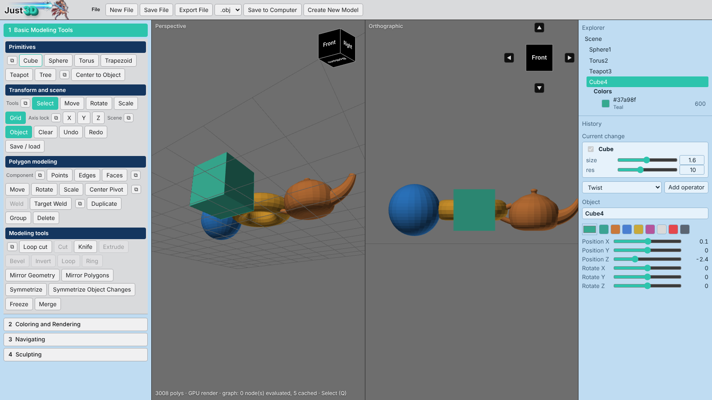

What you get
Everything runs locally in your browser or in a small app window.
Two viewports
Perspective and orthographic side by side, each with its own camera and view cube. Press Space for a full-size perspective view.
Non-destructive history
Every operation is a step you can reopen and edit later. See the current change at a glance, with past steps tucked underneath.
Polygon modeling
Points, edges and faces; loop cut, knife, World Draw, Object Draw, Free Draw, extrude, bevel, weld, duplicate and group. Extrude always pushes outward.
Symmetry tools
Model one half and clone it across with Symmetrize Object Changes — history, paint and deleted faces carry over.
Merge
Join overlapping objects: interior faces are removed and the seam is welded into one clean mesh.
Colour, render, sculpt
Paint face colours, render close-ups, and sculpt with brushes. Export to OBJ when you’re done.
Download
Free to try. Windows 11 launcher, or use it in any modern browser.
- Download the zip from the latest release.
- Right-click it → Properties → tick Unblock → OK, then extract.
- Double-click
Just3D-vNN.exe.